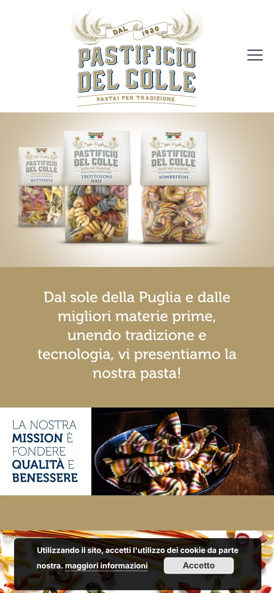
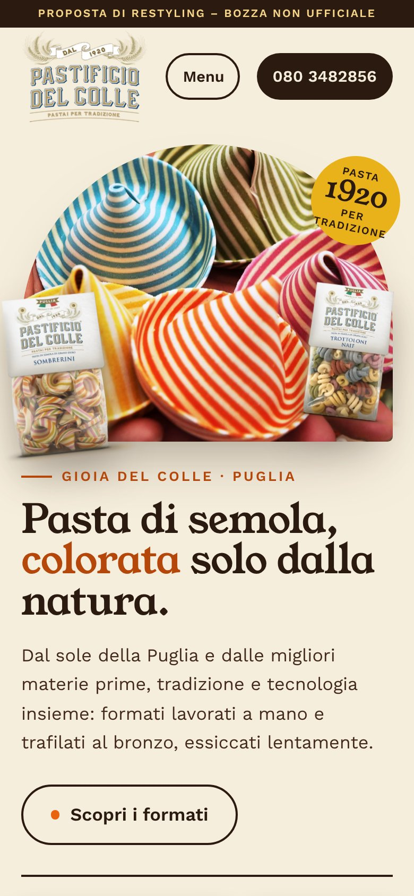
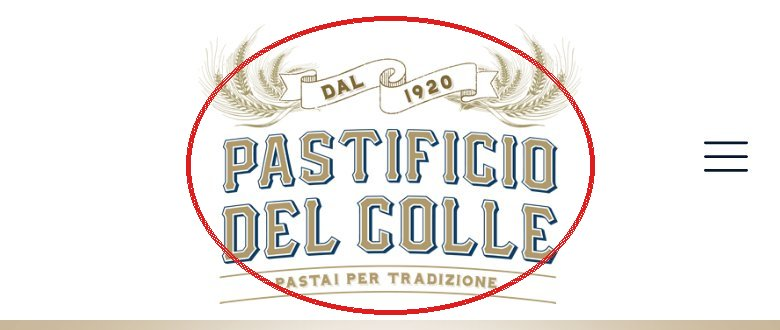
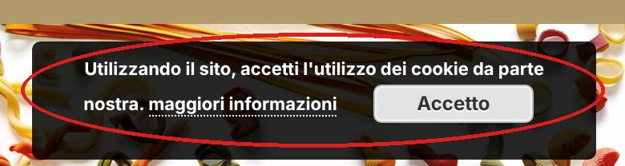
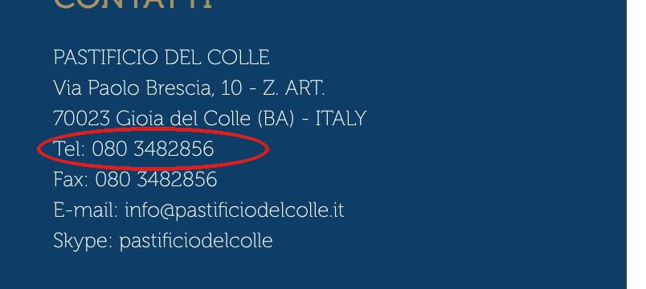

Pastificio del Colle · Gioia del Colle (BA)
Trascina il cursore: a sinistra la prima schermata del sito attuale su telefono, a destra quella della proposta.


OggiCon noiFunziona anche con il dito.
Cosa non va oggi

Su telefono il logo occupa quasi un quinto della prima schermata e la pagina è più larga dello schermo (402 px invece di 390): scorre di lato.

L’avviso resta sopra le immagini mentre si legge.

Il numero è solo testo: da telefono non si può chiamare con un tocco. Il sito è fermo al © 2018 e pesa circa 5,7 MB.
Misurato con Google Lighthouse, telefono
su 100: più alto è meglio.
tempo per mostrare l’elemento principale.
su 100: contrasti, nomi dei link, lettura da screen reader.
Misure fatte con Lighthouse in simulazione di telefono con rete lenta: il sito attuale su pastificiodelcolle.it, la proposta su una copia locale. Sono indicative; i valori reali dipendono dal server.